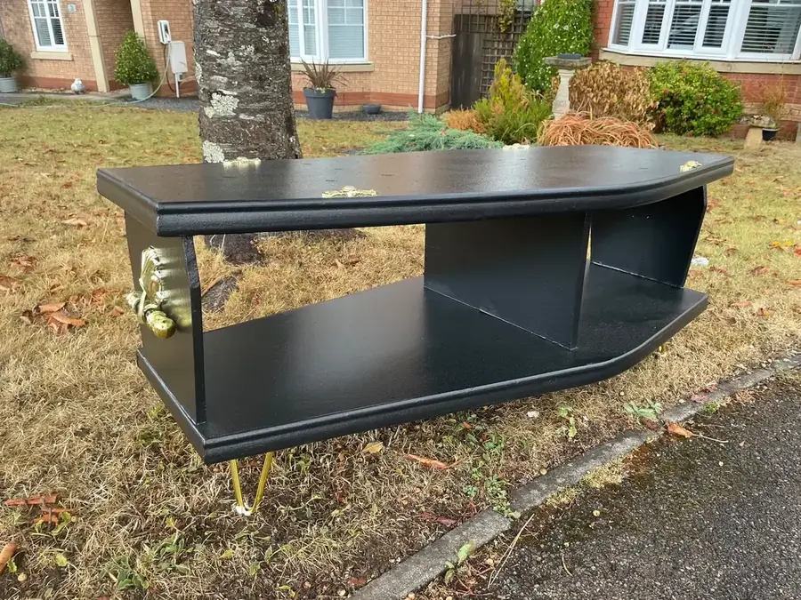
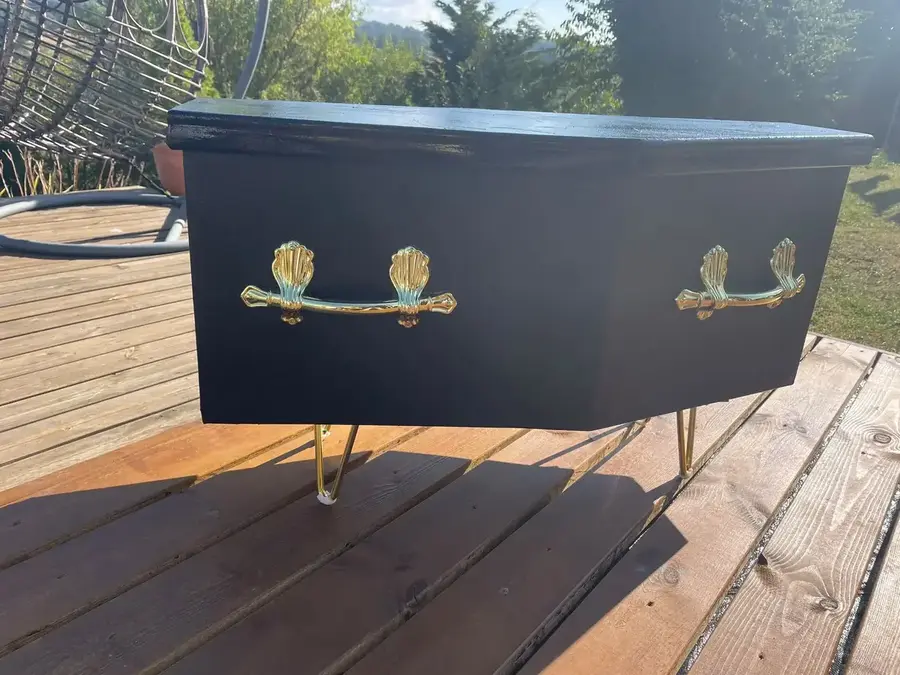
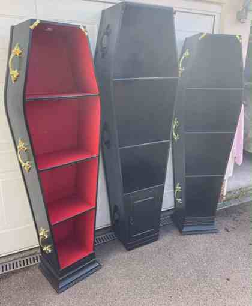

Furniture restoration & upcycling · South Wales
Furniture restoration
in South Wales.
One-off restored furniture, bold upcycled pieces and bespoke commissions, handmade by Garry J Thomas in Treharris.
New in · Available now
Ready to buy now.
One-off restored and upcycled pieces currently available in South Wales. These are finished, ready to go and there is only one of each — once they're gone, they're gone.


Made to order
Coffin furniture, made your way.
Garry can source coffins for new builds and tailor the colour, fittings, lighting and layout to suit your space. Swipe, use the arrows or let the gallery move automatically.





Previously sold
Furniture restoration & upcycling work.
Past commissions and restored pieces that show the range of furniture refurbishment and upcycling work available from GJ's Emporium in South Wales.
Furniture restoration South Wales
Old, unloved and tired furniture — given a new story.
Based in Treharris, Garry restores, refurbishes and upcycles furniture for customers across South Wales. Existing pieces can be repaired, refinished or completely transformed, while bespoke furniture can be created around a customer's idea and measurements.
From dressing tables and drawers to statement cabinets, bars and coffin furniture, the aim is useful furniture with character: carefully finished, completely individual and saved from being forgotten.
South Wales furniture restoration & bespoke commissions
Got an idea?
Send Garry a message with the type of piece, preferred colours and approximate size. For available pieces, message to check it is still unsold and arrange collection or delivery.